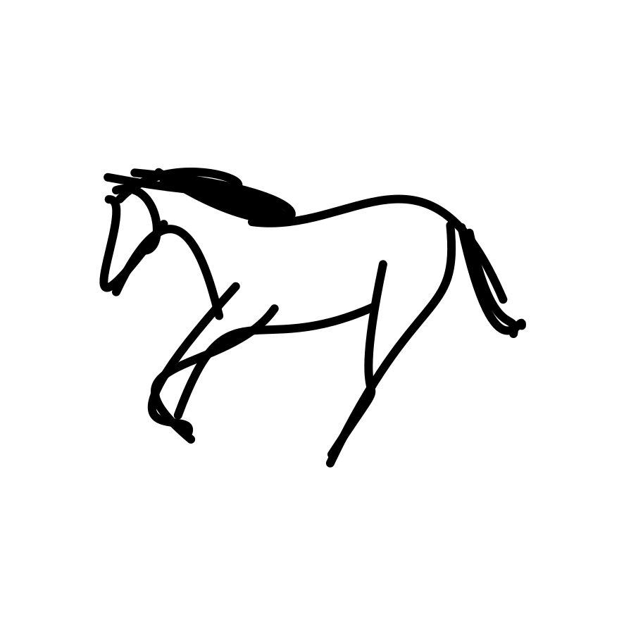
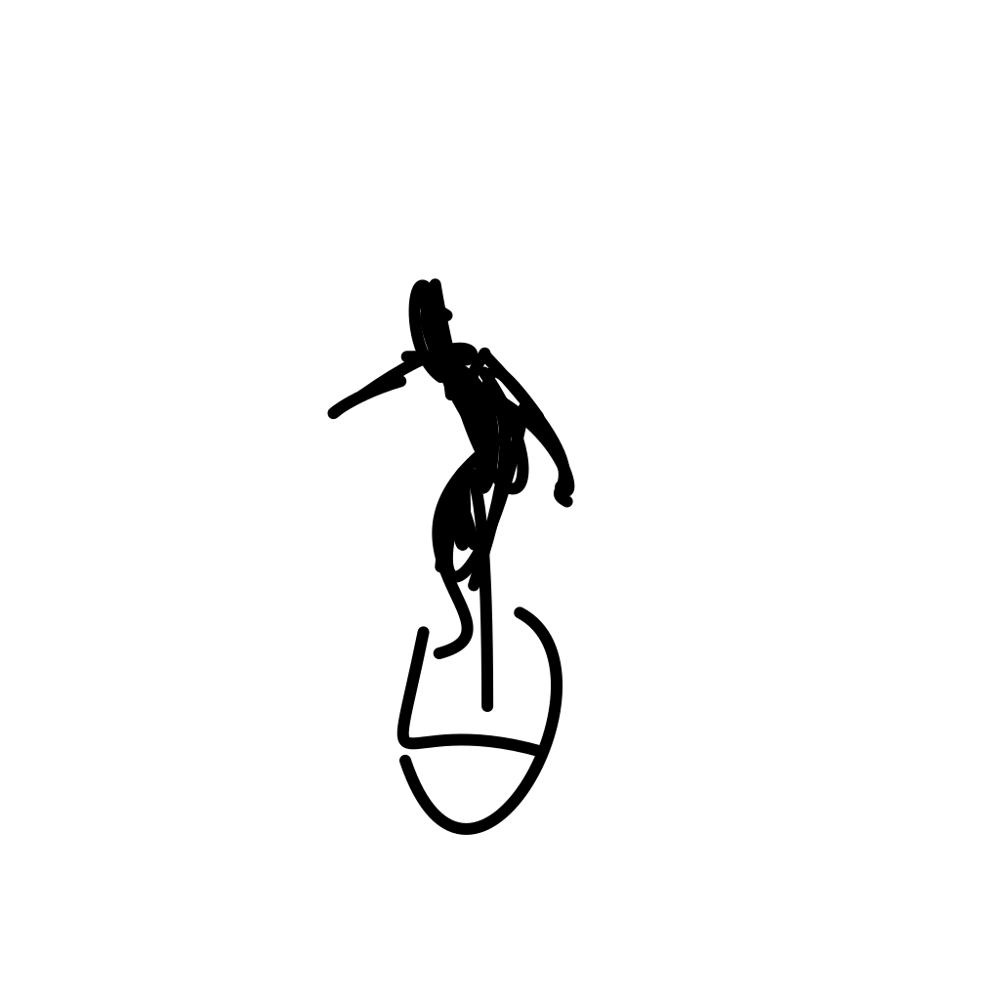

Results

A galloping horse.

A surfer riding and maneuvering on waves on a surfboard.


A butterfly fluttering its win [..]


A gazelle galloping and jumpin [..]


The spaceship accelerates rapi [..]


The cat is playing. [..]


The ballerina is dancing. [..]
The cat is playing. [..]
The ballerina is dancing. [..]


A ceiling fan rotating blades [..]


A camel is walking